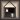

Visit Twilight Games home page
Welcome to Aargon Deluxe, a puzzle game of light and color.
Index
Quick Start Guide (For first time players of Aargon Deluxe.)
The Basics1. Getting StartedEditing and Advanced Features
2. Selecting Skill Level
3. Selecting a Puzzle
4. How To Solve a Puzzle
5. Basic Controls
6. All About Color
7. The Game Pieces
8. Moving Objects
9. A Few More Rules
10. Editing Players and other optionsCredits and Notes
11. Using the Aargon Level Editor
12. About Level Design
13. Advanced Controls
14. What's New In Aargon Deluxe?
15. Credits
16. Troubleshooting